Lab 3: MAUP in Practice — Tessellations and Point-in-Polygon
National Dam Inventory (NID): From Counts to Local Clustering
Background
In this lab we will explore the impacts of tessellated surfaces and the modifiable areal unit problem (MAUP) using the National Dam Inventory maintained by the United States Army Corps of Engineers. The work requires writing reusable functions and careful consideration of feature aggregation/simplification, spatial joins, and data visualization. The end goal is to visualize the distribution of dams and their purposes across the country.
DISCLAIMER: This lab can be computationally intensive. For some steps you may be processing hundreds of millions of relations; run code chunk-by-chunk during development rather than knitting the whole document repeatedly. Your final knit may take a few minutes. Be proud — the report will summarize analyses over very large geometric relations.
This lab covers 4 main skills:
- Tessellating surfaces to discretize space
- Geometry simplification to expedite expensive intersections
- Writing functions to automate repetitive reporting and mapping tasks
- Point-in-polygon counts to aggregate point data
Graduate-Level Expectations
In addition to producing correct code and outputs, your submission should:
- Justify methodological choices: Why did you choose a particular tessellation
keeppercentage for simplification? How did you balance computational efficiency with map detail? - Document performance impacts: Measure and report computation time and geometric accuracy changes resulting from simplification. How do results differ?
- Apply spatial reasoning: Use spatial predicates (e.g.,
st_touches,st_contains) to identify and describe geometric relationships in the dam dataset that raw counts cannot reveal. - Compare across methods: When multiple tessellation approaches yield different clustering patterns, explain which pattern better supports real-world dam management decisions and why.
- Connect to lecture: Explicitly cite the MAUP problem, simplification algorithms (Douglas-Peucker vs. Visvalingam), and spatial predicate definitions from week 3 lectures in your analysis.
Libraries
Question 1:
Here we will prepare five tessellated surfaces from CONUS and write a function to plot them in a descriptive way.
Step 1.1
First, we need a spatial file of CONUS counties. For future area calculations we want these in an equal area projection (EPSG:5070).
To achieve this:
get an
sfobject of US counties (AOI::aoi_get(state = "conus", county = "all"))transform the data to
EPSG:5070
Code
us_counties <- aoi_get(state = "conus", county = "all") %>%
st_transform(5070)Step 1.2
For triangle based tessellations we need point locations to serve as our “anchors”.
To achieve this:
generate county centroids using
st_centroidSince, we can only tessellate over a feature we need to combine or union the resulting 3,108
POINTfeatures into a singleMULTIPOINTfeatureSince these are point objects, the difference between union/combine is mute
Code
county_cents <- st_centroid(us_counties) %>%
st_union()
#plot(county_cents)Step 1.3
Tessellations/Coverage’s describe the extent of a region with geometric shapes, called tiles, with no overlaps or gaps.
Tiles can range in size, shape, area and have different methods for being created.
Some methods generate triangular tiles across a set of defined points (e.g. Voronoi and Delaunay triangulation)
Others generate equal area tiles over a known extent (st_make_grid)
For this lab, we will create surfaces of CONUS using using 4 methods, 2 based on an extent and 2 based on point anchors:
Tessellations :
st_voronoi: creates a Voronoi tessellationst_triangulate: triangulates a set of points (not constrained)
Coverages:
st_make_grid: creates a square grid covering the geometry of an sf or sfc objectst_make_grid(square = FALSE): creates a hexagonal grid covering the geometry of an sf or sfc objectThe side of coverage tiles can be defined by a cell resolution or a specified number of cell in the X and Y direction
For this step:
- Make a voroni tessellation over your county centroids (
MULTIPOINT) - Make a triangulated tessellation over your county centroids (
MULTIPOINT) - Make a gridded coverage with n = 70, over your counties object
- Make a hexagonal coverage with n = 70, over your counties object
In addition to creating these 4 coverage’s we need to add an ID to each tile.
To do this:
add a new column to each tessellation that spans from
1:n().Remember that ALL tessellation methods return an
sfcGEOMETRYCOLLECTION, and to add attribute information - like our ID - you will have to coerce thesfclist into ansfobject (st_sforst_as_sf)
Last, we want to ensure that our surfaces are topologically valid/simple.
To ensure this, we can pass our surfaces through
st_cast.Remember that casting an object explicitly (e.g.
st_cast(x, "POINT")) changes a geometryIf no output type is specified (e.g.
st_cast(x)) then the cast attempts to simplify the geometry.If you don’t do this you might get unexpected “TopologyException” errors.
Code
plot_tess = function(data, title){
ggplot() +
geom_sf(data = data, fill = "white", col = "navy", size = .2) +
theme_void() +
labs(title = title, caption = paste("This tesselation has:", nrow(data), "tiles" )) +
theme(plot.title = element_text(hjust = .5, color = "navy", face = "bold"))
}
#Voroni
v_grid = st_voronoi(county_cents) %>%
st_cast() %>%
st_as_sf() %>%
mutate(id = 1:n())
#plot
plot_tess(v_grid, "voronoi test")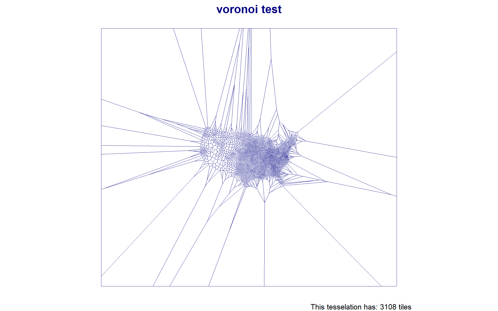
Code
#Triangulate
t_grid = st_triangulate(county_cents) |>
st_cast() |>
st_as_sf() |>
mutate(id = 1:n())
#plot
plot_tess(t_grid, "Triangle test")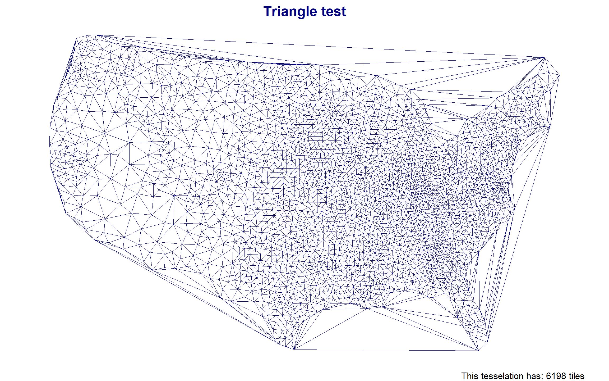
Code
#Square grid
sq_grid = st_make_grid(us_counties, n = 70) %>%
st_as_sf() %>%
st_cast() %>%
mutate(id = 1:n())
#plot
plot_tess(sq_grid,"Square test")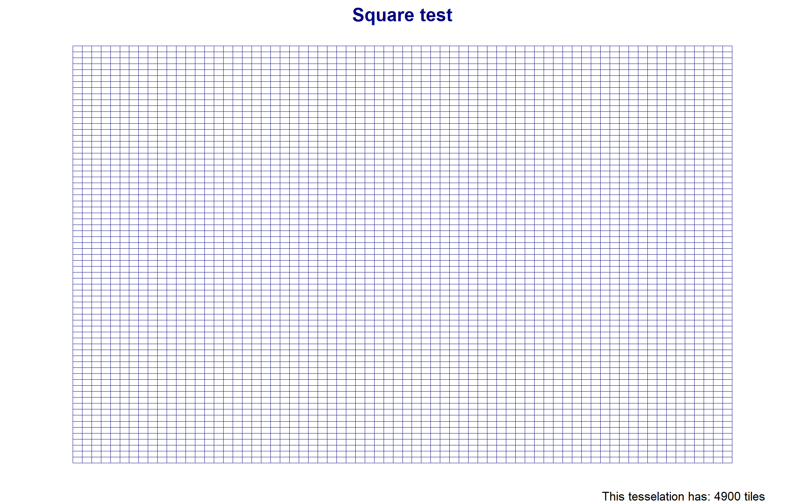
Code
#Hexagonal grid
hex_grid = st_make_grid(us_counties, n = 70, square = FALSE) %>%
st_as_sf() %>%
st_cast() %>%
mutate(id = 1:n())
#plot
plot_tess(hex_grid, "Hexigonal test")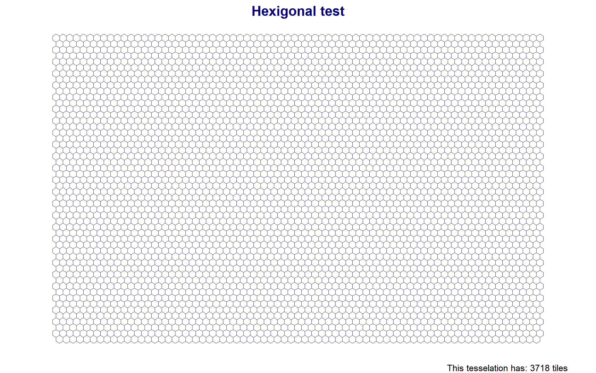
Step 1.4
If you plot the above tessellations you’ll see that the Voronoi, Delaunay triangulation, hexagon, and square grids all produce regions far beyond the boundaries of CONUS.
We need to cut these boundaries to CONUS borders.
To do this, we need two different approaches: - st_intersection() for Voronoi and Delaunay (these tessellations create geometries that extend infinitely/far beyond the study area; intersection clips them at the exact boundary) - st_filter() for hexagon and square grids (these regular grids are already designed to fit; filtering keeps only the tiles that intersect CONUS)
Either way, we’ll need a geometry of CONUS to serve as our clipping feature. We can get this by unioning our existing county boundaries.
Code
conus_boundry <- st_union(us_counties)
#plot(conus_boundry)
#Voronoi
v_grid_final <- st_intersection(v_grid, conus_boundry)
#plot
plot_tess(v_grid_final, "clipped Voronoi")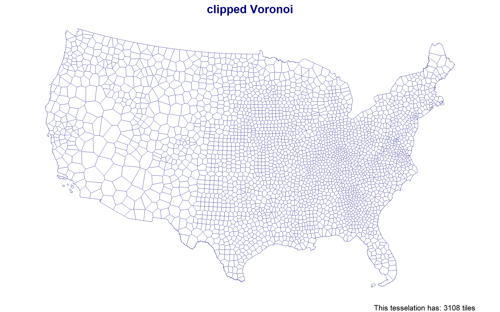
Code
#Delaunay
t_grid_final <- st_intersection(t_grid, conus_boundry)
#plot
plot_tess(t_grid_final, "clipped Delaunay")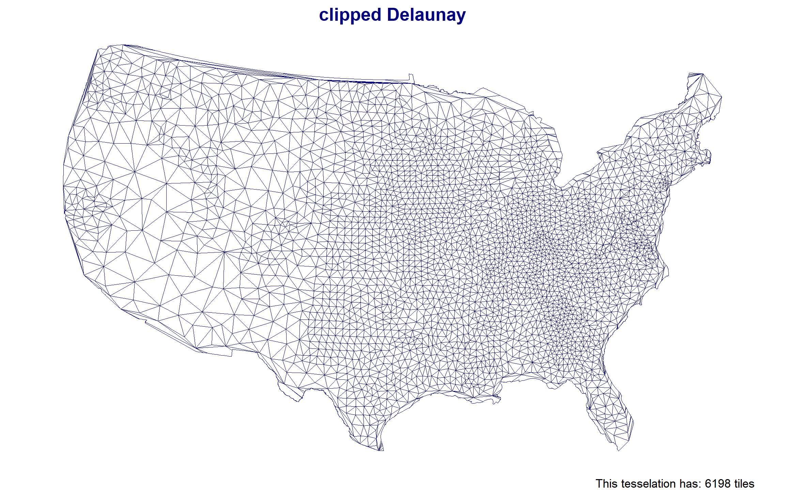
Code
#Square
sq_grid_final <- st_filter(sq_grid, conus_boundry)
#plot
plot_tess(sq_grid_final, "clipped Square")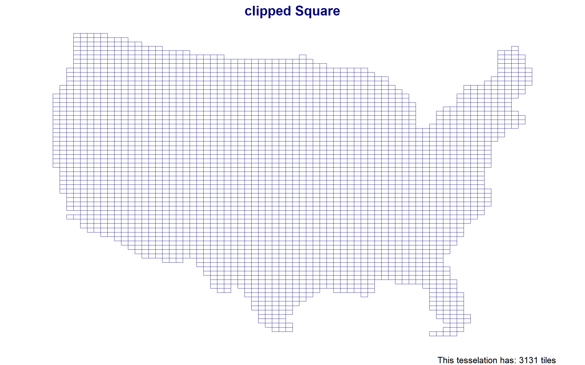
Code
#Hexagonal
hex_grid_final <- st_filter(hex_grid, conus_boundry)
#plot
plot_tess(hex_grid_final, "clipped Hexagonal")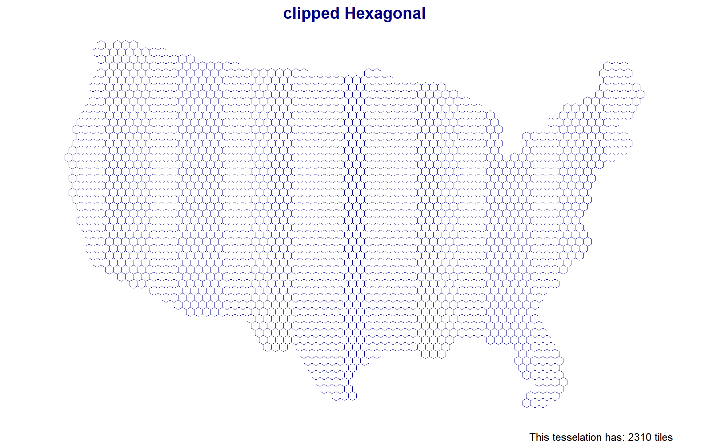
Step 1.5
With a single feature boundary, we must carefully consider the complexity of the geometry. Remember, the more points our geometry contains, the more computations needed for spatial predicates our differencing. For a task like ours, we do not need a finely resolved coastal boarder.
To achieve this:
Simplify your unioned border using the Visvalingam algorithm provided by
rmapshaper::ms_simplify.Choose what percentage of vertices to retain using the
keepargument and work to find the highest number that provides a shape you are comfortable with for the analysis:
Code
conus_boundry10 = ms_simplify(conus_boundry, keep = .1)
conus_boundry5 = ms_simplify(conus_boundry, keep = .05)
conus_boundry1 = ms_simplify(conus_boundry, keep = .01) # Comfortable with this
g1 = ggplot(conus_boundry) +
geom_sf() +
labs(title = paste(mapview::npts(conus_boundry), 'points'),
caption = "keep = 1") +
theme_void()
g2 = ggplot(conus_boundry10) +
geom_sf() +
labs(title = paste(mapview::npts(conus_boundry10), 'points'),
caption = "keep = .1 (10%)") +
theme_void()
g3 = ggplot(conus_boundry5) +
geom_sf() +
labs(title = paste(mapview::npts(conus_boundry5), 'points'),
caption = "keep = .05 (5%)") +
theme_void()
g4 = ggplot(conus_boundry1) +
geom_sf() +
labs(title = paste(mapview::npts(conus_boundry1), 'points'),
caption = "keep = .01 (1%)") +
theme_void()
gridExtra::grid.arrange(g1,g2,g3,g4, nrow = 1)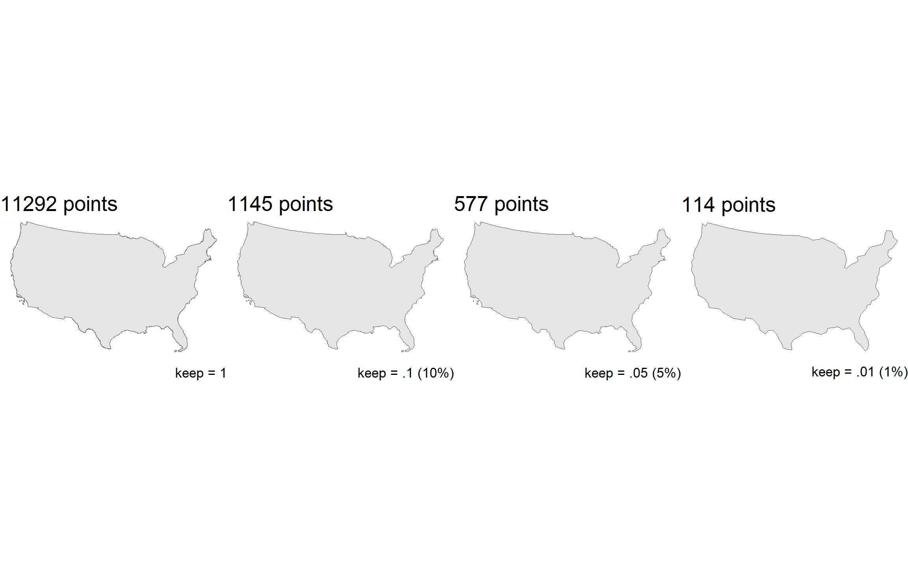
ImportantValidation Checkpoint (Optional)
After simplification, verify the boundary is still valid and covers all dams:
Code
# Check: Is the simplified boundary valid?
st_is_valid(boundary_simplified)
st_is_valid(conus_boundry1)
# Check: Does it still contain all of CONUS?
st_bbox(boundary_simplified) # Should cover roughly [-125, 24] to [-66, 49]
st_bbox(conus_boundry1)
# Check: Visual comparison
plot(boundary_original, main = "Original")
plot(conus_boundry, main = "Original")
plot(boundary_simplified, main = "Simplified")
plot(conus_boundry1, main = "Simplified")
NoteSimplification: Boundary Only, Not Tessellation
Important distinction: This step simplifies the CONUS boundary container we use for clipping the tessellated surfaces. Simplification affects only the geometry of the clipping operation — it speeds up the intersection computation by reducing boundary vertices. Your tessellation tiles themselves remain high-resolution and unchanged. You are not simplifying the tessellation itself, only the container we clip with.
Once you are happy with your simplification, use the
mapview::nptsfunction to report the number of points in your original object, and the number of points in your simplified object.How many points were you able to remove? What are the consequences of doing this computationally?
Code
simple_boundary <- conus_boundry1
mapview::npts(conus_boundry) #11292[1] 11292Code
mapview::npts(simple_boundary) #114 [1] 114Original boundary: 11292 points
Simplified boundary: 114 points
Removed points: 11178 points
Computationally this will cut down on time required to compute the intersection by reducing boundary vertices.
- Finally, crop all four grids to the CONUS boundary—but using different methods:
- Voronoi & Delaunay (geometry-based tessellations): Use
st_intersection()to cut these geometries at the CONUS boundary. These tessellations create boundaries that extend well beyond CONUS; intersection actually trims them. - Hexagon & Square grids (regular grids): Use
st_filter()to keep only tiles that touch CONUS. These grids are already regularly aligned; filtering just discards edge tiles without modifying them.
- Voronoi & Delaunay (geometry-based tessellations): Use
Code
#Voronoi
v_grid_final <- st_intersection(v_grid, simple_boundary)
#plot
#plot_tess(v_grid_final, "clipped voronoi")
#Delaunay
t_grid_final <- st_intersection(t_grid, simple_boundary)
#plot
#plot_tess(t_grid_final, "clipped Delaunay")
#Square
sq_grid_final <- st_filter(sq_grid, simple_boundary)
#plot
#plot_tess(sq_grid_final, "clipped square")
#Hexagonal
hex_grid_final <- st_filter(hex_grid, simple_boundary)
#plot
#plot_tess(hex_grid_final, "clipped Hexagonal")
TipWhy Different Cropping Methods?
The distinction matters for your spatial analysis:
st_intersection()on Voronoi/Delaunay: Produces edges/boundaries that align precisely with the CONUS border. Tiles at the edge are cut, not discarded. This is geometrically accurate but creates irregular edge shapes.st_filter()on hexagon/square grids: Keeps only complete regular tiles that touch CONUS, discarding edge tiles. The boundary is a stair-step pattern following the regular grid.
In Q3, when you compare these tessellations, you’ll notice that Voronoi and Delaunay have denser tile coverage (e.g., ~2800–6200 tiles) because they extend to the exact boundary. Hexagons and squares have fewer tiles (e.g., ~1900–2000) because they’re bound to a regular grid. This difference affects spatial statistics: denser tessellations reveal finer-grained patterns; coarser tessellations show broader regional structure. This is part of the Modifiable Areal Unit Problem (MAUP).
Step 1.6
The last step is to plot your tessellations. We don’t want to write out 5 ggplots (or mindlessly copy and paste)
Instead, lets make a function that takes an sf object as arg1 and a character string as arg2 and returns a ggplot object showing arg1 titled with arg2.
The form of a function is:
Code
name = function(arg1, arg2) {
# ... code goes here ...
}For this function:
The name can be anything you chose, arg1 should take an
sfobject, and arg2 should take a character string that will title the plotIn your function, the code should follow our standard
ggplotpractice where your data is arg1, and your title is arg2The function should also enforce the following:
a
whitefilla
navybordera
sizeof 0.2`theme_void``
a caption that reports the number of features in arg1
- You will need to paste character stings and variables together.
Code
# Plot Function
plot_tess = function(data, title){
ggplot() +
geom_sf(data = data, fill = "white", col = "navy", size = .2) +
theme_void() +
labs(title = title, caption = paste("This tesselation has:", nrow(data), "tiles" )) +
theme(plot.title = element_text(hjust = .5, color = "navy", face = "bold"))
}Step 1.7
Use your new function to plot each of your tessellated surfaces and the original county data (5 plots in total):
Code
plot_tess(us_counties, "US Counties")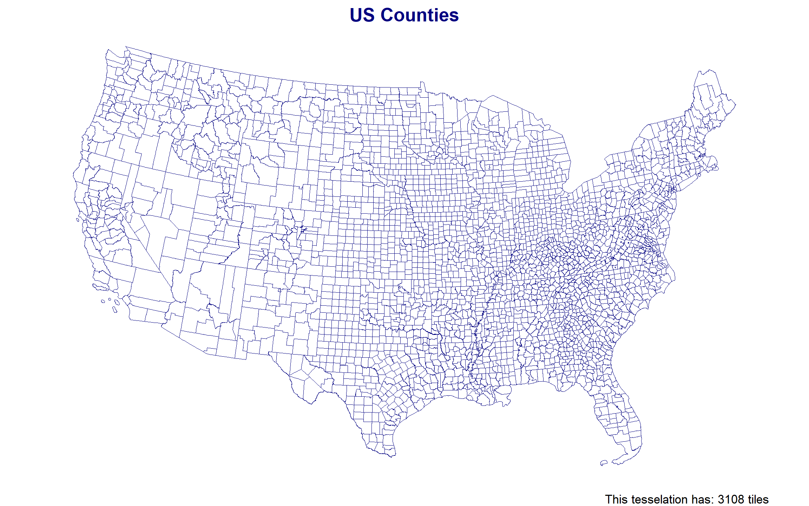
Code
plot_tess(v_grid_final, "Voronoi Tesselation")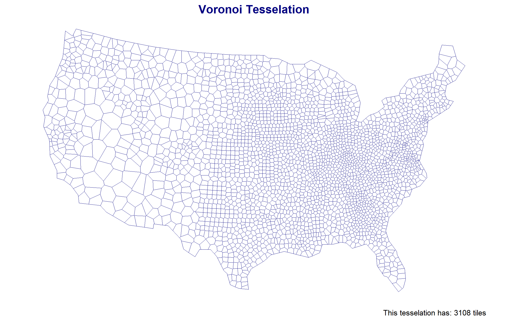
Code
plot_tess(t_grid_final, "Delaunay Tesselation")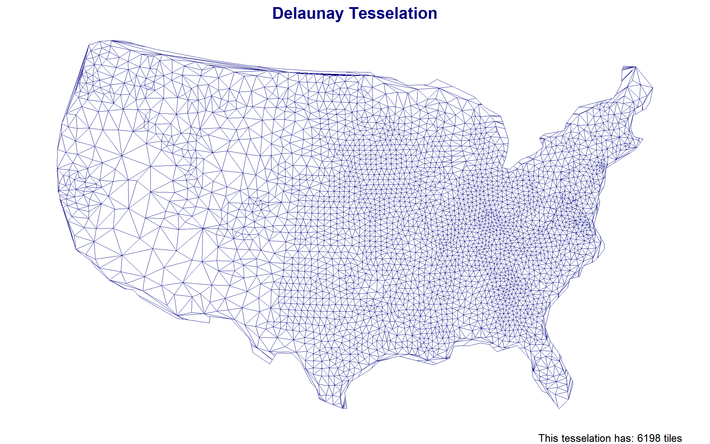
Code
plot_tess(sq_grid_final, "Square Grid Tesselation")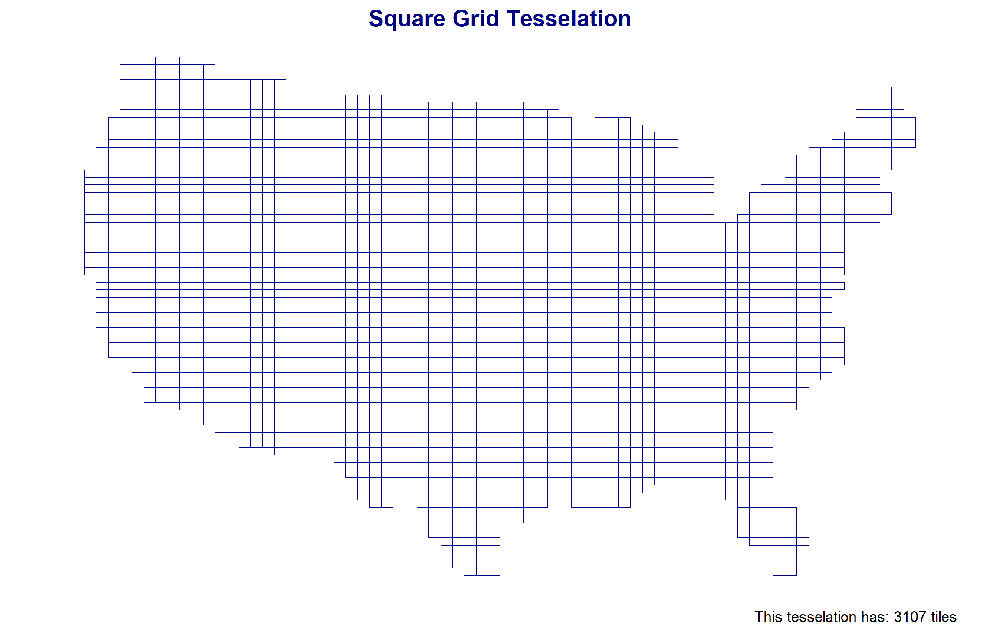
Code
plot_tess(hex_grid_final, "Hexagonal Grid Tesselation")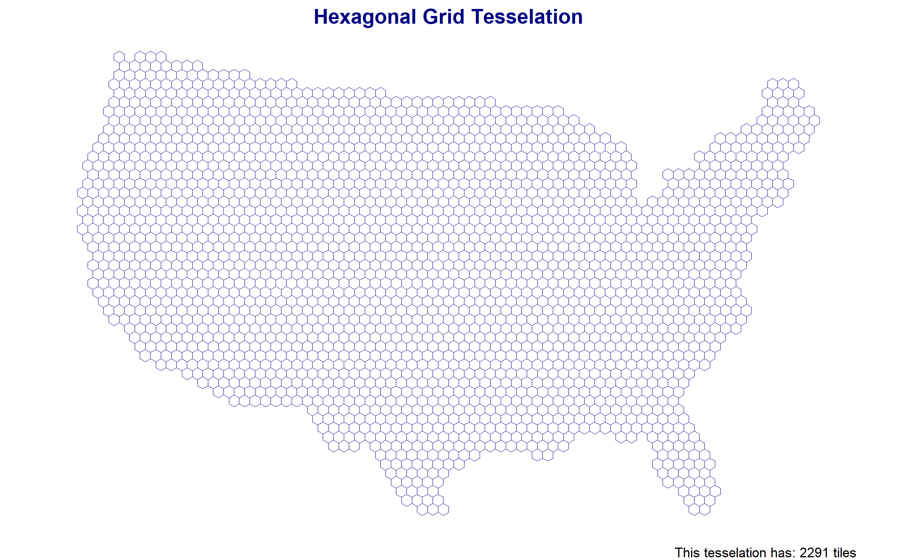
Question 2:
In this question, we will write out a function to summarize our tessellated surfaces.
Step 2.1
First, we need a function that takes a sf object and a character string and returns a data.frame.
For this function:
The function name can be anything you chose, arg1 should take an
sfobject, and arg2 should take a character string describing the objectIn your function, calculate the area of
arg1; convert the units to km2; and then drop the unitsNext, create a
data.framecontaining the following:text from arg2
the number of features in arg1
the mean area of the features in arg1 (km2)
the standard deviation of the features in arg1
the total area (km2) of arg1
Return this
data.frame
Code
summ_tess <- function(data, type) {
areakm2 = drop_units(set_units(st_area(data), "km2"))
data.frame(type = type, count = length(areakm2), mean = mean(areakm2), sd = sd(areakm2), tot = sum(areakm2))
}Step 2.2
Use your new function to summarize each of your tessellations and the original counties.
Code
summ_tess(us_counties, "Original Counties") type count mean sd tot
1 Original Counties 3108 2605.05 3443.712 8096496Code
summ_tess(v_grid_final, "Voronoi Tesselation") type count mean sd tot
1 Voronoi Tesselation 3108 2601.704 2908.246 8086096Code
summ_tess(t_grid_final, "Delaunay Tesselation") type count mean sd tot
1 Delaunay Tesselation 6198 1290.716 1599.315 7999856Code
summ_tess(sq_grid_final, "Square Grid Tesselation") type count mean sd tot
1 Square Grid Tesselation 3107 2761.289 1.303573e-11 8579323Code
summ_tess(hex_grid_final, "Hexagonal Grid Tesselation") type count mean sd tot
1 Hexagonal Grid Tesselation 2291 3781.179 1.664041e-11 8662681Step 2.3
Multiple data.frame objects can bound row-wise with bind_rows into a single data.frame
For example, if your function is called sum_tess, the following would bind your summaries of the triangulation and voroni object.
Code
#bind_rows(
# sum_tess(triangulate_grid, "triangulation"),
# sum_tess(voronoi_grid, "voronoi")
#)
summ_table <- bind_rows(
summ_tess(us_counties, "Original Counties"),
summ_tess(v_grid_final, "Voronoi Tesselation"),
summ_tess(t_grid_final, "Delaunay Tesselation"),
summ_tess(sq_grid_final, "Square Grid Tesselation"),
summ_tess(hex_grid_final, "Hexagonal Grid Tesselation")
)Step 2.4
Once your 5 summaries are bound (2 tessellations, 2 coverage’s, and the raw counties) print the data.frame as a nice table using knitr/kableExtra/flextable or your preferred table formatting package.
Code
knitr::kable(summ_table, caption = "Tesselation Characteristics",
col.names = c("Type", "Elements", "Mean Area (km2)", "Standard Deviation Area (km2)" ,"Coverage Area"),
format.args = list(big.mark = ",", digits = 2)) %>%
kableExtra::kable_styling("striped", full_width = T, font_size = 12)| Type | Elements | Mean Area (km2) | Standard Deviation Area (km2) | Coverage Area |
|---|---|---|---|---|
| Original Counties | 3,108 | 2,605 | 3,444 | 8,096,496 |
| Voronoi Tesselation | 3,108 | 2,602 | 2,908 | 8,086,096 |
| Delaunay Tesselation | 6,198 | 1,291 | 1,599 | 7,999,856 |
| Square Grid Tesselation | 3,107 | 2,761 | 0 | 8,579,323 |
| Hexagonal Grid Tesselation | 2,291 | 3,781 | 0 | 8,662,681 |
Step 2.5
Comment on the traits of each tessellation. Be specific about how these traits might impact the results of a point-in-polygon analysis in the contexts of the modifiable areal unit problem and with respect computational requirements.
Interpretation:
The high standard deviation in area for Original Counties introduces significant MAUP bias, as larger administrative units may appear as hotspots simply by “trapping” more points regardless of actual density. In contrast, Hexagonal and Square Grids eliminate this area variance entirely SD = 0, providing a consistent spatial support that ensures results are driven by physical dam distribution rather than the “zoning effect” of arbitrary boundaries. While Delaunay tessellations offer high-resolution detail, their large element count (6,198) significantly increases computational requirements for neighbor matrix calculations and spatial joins. Ultimately, the hexagonal grid’s equal-area trait and shared-edge geometry make it the most robust choice for minimizing MAUP and maintaining computational efficiency in a point-in-polygon analysis.
Question 3: Dam Distribution Analysis & Tessellation Selection
The data we will analyze in this lab are from the U.S. Army Corps of Engineers National Dam Inventory (NID). This dataset documents ~91,000 dams in the United States and includes attributes such as design specifications, risk level, age, and purpose.
Dam management agencies face a critical question: Where are dams actually clustered, and how do I visualize that clustering in a way that supports infrastructure planning decisions? The answer depends on your choice of geographic boundaries—that is, your tessellation. Different tessellations will reveal different patterns of dam concentration. Your job in this question is to:
- Quantify dam distributions across multiple tessellation methods
- Understand how the modifiable areal unit problem (MAUP) creates different narratives from the same underlying data
- Select and justify the tessellation that best supports management decisions about dam clustering
For the remainder of this lab we will analyze the distributions of these dams using point-in-polygon analysis.
Step 3.1
In the tradition of this class - and true to data science/GIS work - you need to find, download, and manage raw data. THe NID dataset is available as a CSV download from the USACE website here. Grab the CSV.
- Return to your RStudio Project and read the data in using the
readr::read_csv- Use
janitor::clean_names()to standardize column names to snake_case (tidy data convention) - After reading the data in, be sure to remove rows that don’t have location values (
!is.na()) - Convert the
data.frameto asfobject by defining the coordinates and CRS - Transform the data to a CONUS AEA (EPSG:5070) projection - matching your tessellation
- Filter to include only those within your CONUS boundary
- Use
NoteData Cleaning with janitor
The NID CSV has messy column names (all caps with spaces). The janitor::clean_names() function converts them to clean snake_case (LONGITUDE → longitude, DAM NAME → dam_name). This is a lightweight utility that saves time and prevents typos in downstream code. It’s part of data wrangling best practice.
Code
# Prefer a local NID CSV named `nation.csv`; otherwise download to that filename
nid_url <- "https://nid.sec.usace.army.mil/api/nation/csv"
dir.create("data", showWarnings = FALSE)
nid_dest <- "data/nation.csv"
if (file.exists(nid_dest)) {
message("Using local NID file: ", nid_dest)
} else {
tryCatch({
message("Downloading NID CSV to: ", nid_dest)
download.file(nid_url, nid_dest, quiet = FALSE, mode = "wb")
}, error = function(e) {
message("NID download failed: ", e$message)
})
}
# read the CSV (will error if download failed and file missing)
if (!file.exists(nid_dest)) stop("NID CSV not found at ", nid_dest)
dams <- readr::read_csv(nid_dest, skip =1, show_col_types = FALSE) |>
janitor::clean_names()
usa <- AOI::aoi_get(state = "conus") %>%
st_union() %>%
st_transform(5070)
dams2 <- dams %>%
filter(!is.na(latitude)) %>%
st_as_sf(coords = c("longitude", "latitude"), crs = 4326) %>%
st_transform(5070) %>%
st_filter(usa)Step 3.2
Following the in-class examples develop an efficient point-in-polygon function that takes:
- points as
arg1, - polygons as
arg2, - The name of the id column as
arg3
The function should make use of spatial and non-spatial joins, sf coercion and dplyr::count. The returned object should be input sf object with a column - n - counting the number of points in each tile.
ImportantPoint-in-Polygon Function Design Notes
CRS Matching: Ensure
pointsandpolygonsare in the same CRS before callingst_join(). If they differ, usest_transform()to align them first.Empty Polygons:
st_join(...) %>% count(id)creates one row per intersection found. Polygons with zero intersections will appear in the result withn = 0only if you use a left join (default forst_join()). If a polygon has no points, make sure your result still includes it; if not, usest_join(...) %>% right_join(...)or initialize counts explicitly.Sparse vs. Dense Matrices: In this step you’re not creating matrices. However, in Q6.1 you’ll use
st_touches(..., sparse = FALSE)to build neighbor matrices explicitly. Here in Q3,st_join()handles the spatial predicate internally (st_intersectsby default), so you won’t set sparsity—just know thatst_join()scales well to large datasets. For troubleshooting performance: if your function runs slowly with 91,000 dams, check whether your tessellation polygons are topologically simple (usest_is_valid()).
Code
point_in_polygon = function(points, polygon, var) {
if (st_crs(points) != st_crs(polygon)) {
points <- st_transform(points, st_crs(polygon))
}
st_join(polygon, points) %>%
st_drop_geometry() %>%
count(get(var)) %>%
setNames(c(var, "n")) %>%
left_join(polygon, by = var) %>%
st_as_sf()
}Step 3.3
Apply your point-in-polygon function to each of your five tessellated surfaces where:
- Your points are the dams
- Your polygons are the respective tessellation
- The id column is the name of the id columns you defined.
Code
plot_pip = function(data, title){
ggplot() +
geom_sf(data = data, aes(fill = log(n)), alpha = .9, size = .2) +
scale_fill_viridis_c(option = "viridis", name = "Number of Dams") +
theme_void() +
theme(#legend.position = 'none',
plot.title = element_text(face = "bold", color = "darkgreen", hjust = .5, size = 12)) +
labs(title = title,
caption = paste0(sum(data$n), " Dams represented"))
}
#Add id colmn to counties object
us_counties <- us_counties %>%
mutate(id = 1:n())
counties_pip <- point_in_polygon(dams2, us_counties, "id")
p1 <- plot_pip(counties_pip, "Dam Consentration: Counties")
v_pip <- point_in_polygon(dams2, v_grid_final, "id")
p2 <- plot_pip(v_pip, "Dam Consentration: Voronoi")
t_pip <- point_in_polygon(dams2, t_grid_final, "id")
p3 <- plot_pip(t_pip, "Dam Concentration: Triangulate")
sq_pip <- point_in_polygon(dams2, sq_grid_final, "id")
p4 <- plot_pip(sq_pip, "Dam Concentration: Square")
hex_pip <- point_in_polygon(dams2, hex_grid_final, "id")
p5 <- plot_pip(hex_pip, "Dam Concentration: Hexagonal")Step 3.4
Lets continue the trend of automating our repetitive tasks through function creation. This time make a new function that extends your previous plotting function.
For this function:
The name can be anything you chose, arg1 should take an
sfobject, and arg2 should take a character string that will title the plotThe function should also enforce the following:
the fill aesthetic is driven by the count column
nthe col is
NAthe fill is scaled to a continuous
viridiscolor ramptheme_voida caption that reports the number of dams in arg1 (e.g.
sum(n))- You will need to paste character stings and variables together.
Code
plot_pip = function(data, title){
ggplot() +
geom_sf(data = data, aes(fill = log(n)), alpha = .9, size = .2) +
scale_fill_viridis_c(option = "viridis", name = "Number of Dams") +
theme_void() +
theme(#legend.position = 'none',
plot.title = element_text(face = "bold", color = "darkgreen", hjust = .5, size = 12)) +
labs(title = title,
caption = paste0(sum(data$n), " Dams represented"))
}Step 3.5
Apply your plotting function to each of the 5 tessellated surfaces with Point-in-Polygon counts:
Code
p1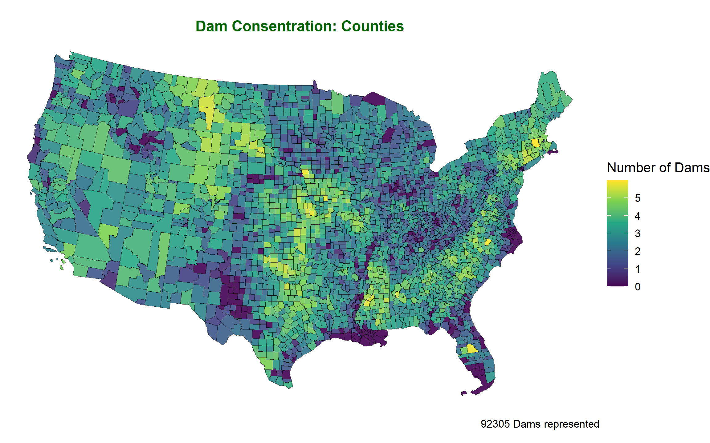
Code
p2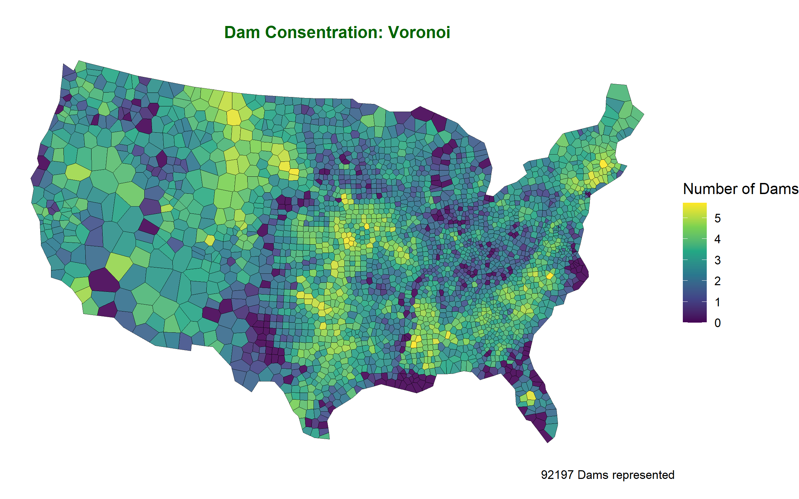
Code
p3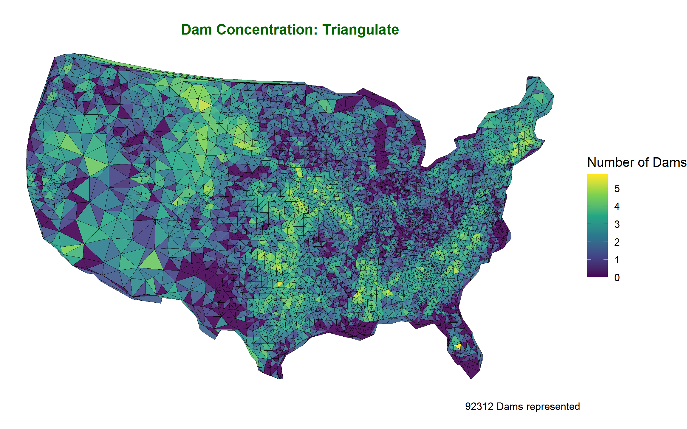
Code
p4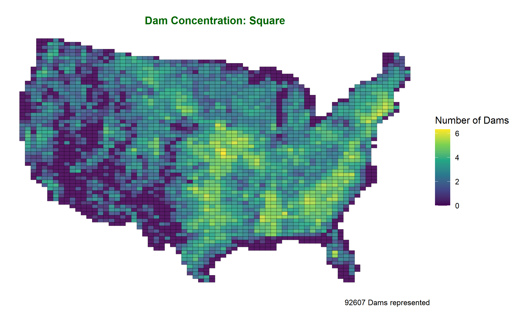
Code
p5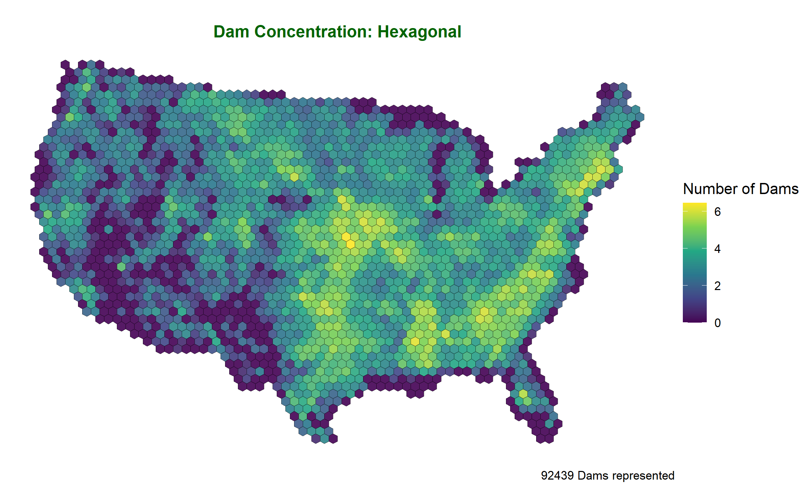
Step 3.6
Policy Analysis: Tessellation and Decision-Making
Now that you have dam counts across all five tessellation methods, compare the results. Specifically:
a. Create a side-by-side visualization (faceted or small multiples) showing dam clustering under each of the five tessellations. Use patchwork or cowplot to arrange the 5 plots you created in Step 3.5 for direct visual comparison.
b. Identify 2–3 geographic regions where tessellation choice produces substantially different patterns (e.g., one method shows a clear hotspot while another shows diffuse distribution). For each region, describe the pattern difference and explain why the tessellation geometry creates divergent results. Reference the characteristics from your Q2 summary (number of tiles, mean area, standard deviation).
c. Which single tessellation would you recommend to a dam operations manager seeking to understand geographic clustering? Justify your choice by addressing: - Does the tessellation align with natural or management decision-making units (e.g., river basins, states, hydrologic regions)? - Does it reveal meaningful patterns without over-fragmenting the landscape or creating artificial boundaries? - How does MAUP influence your recommendation—are other tessellations equally valid, just for different questions? - How did simplification affect your choice? Would a coarser or finer simplification (different keep percentage) change your recommendation? - What does “best supports management decisions” mean concretely in your context—does it matter more that hot spots are obvious, or that boundaries align with jurisdictions?
Your answer should be 3–4 paragraphs and grounded in the actual visualizations and patterns you observe from your tessellation comparisons.
Code
library(patchwork)
#patwork plots
comparison_plot <- (p1 + p2) /
(p3 + p4) /
(p5 + plot_spacer()) +
plot_layout(guides = "collect") &
plot_annotation(
title = 'Dam Distribution Across Different Tessellation Methods',
subtitle = 'Comparison of administrative boundaries vs. geometric grids',
caption = 'Data: National Inventory of Dams | CRS: EPSG:5070',
theme = theme(plot.title = element_text(size = 10, face = "bold", hjust = 0.5))
) &
theme(legend.position = "bottom"
#plot.margin = margin(3, 3, 3, 3)
)
comparison_plot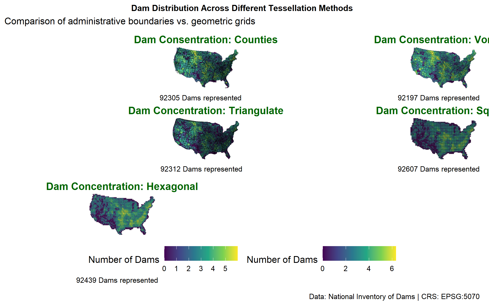
Interpretation:
Geographic Divergence and Geometry
The most striking difference occurs in the Great Plains and the Upper Midwest. In the Counties map, the pattern appears highly fragmented and “noisy” due to the high standard deviation in county sizes; small counties in the East create tight clusters of color while massive Western counties spread the data thin. In contrast, the Hexagonal tessellation—which has a much larger mean area (\(3,781\) \(km^2\)) and zero area variance, smoothes this noise into a clear, continuous hotspot in the Mississippi River Basin. Similarly, in the Mountain West, the Triangulate (Delaunay) method creates an overly dense web of small tiles that over-fragments the landscape, making the distribution look more sparse than it appears in the Square grid, where the uniform support highlights consistent regional density. These differences arise because irregular polygons conflate the size of the “container” with the density of the dams, a classic MAUP zoning effect.
Recommendation for Dam Operations
I recommend the Hexagonal Grid for a dam operations manager focused on geographic clustering. Unlike counties, which are bound by political history, hexagons provide a uniform “equal-area” support that ensures every unit has an equal probability of capturing a dam, making it the most mathematically honest way to identify physical density. Hexagons are superior to square grids for hydrology because they share equidistant borders with all six neighbors, avoiding the “corner-touching” bias of squares and creating more reliable neighbor matrices for the LISA analysis. While counties are the unit of management jurisdiction, they fail to reveal the cross-border hydrologic clusters that hexagons highlight as a singular, cohesive hotspot.
MAUP and Management Context
The choice of tessellation is inherently tied to the question: “Best supports management decisions” in this context means prioritizing the identification of physical infrastructure clusters over administrative alignment. While counties are valid for local budget allocations, they suffer from MAUP sensitivity that obscures the true regional scale of dam projects. Had a finer simplification been used (a higher keep percentage), the hexagons would have become smaller, potentially over-fragmenting the clusters into “isolated” units and losing the regional signal. For a manager, the hexagon grid strikes the perfect balance, it is coarse enough to reveal broad regional trends in large river systems, yet consistent enough to ensure that hotspots are a result of infrastructure density rather than the arbitrary size of the polygon.
Question 4
The NID provides a comprehensive data dictionary here. In it we find that dam purposes are designated by a character code.
These are shown below for convenience (built using knitr on a data.frame called nid_classifier):
| abbr | purpose |
|---|---|
| I | Irrigation |
| H | Hydroelectric |
| C | Flood Control |
| N | Navigation |
| S | Water Supply |
| R | Recreation |
| P | Fire Protection |
| F | Fish and Wildlife |
| D | Debris Control |
| T | Tailings |
| G | Grade Stabilization |
| O | Other |
In the data dictionary, we see a dam can have multiple purposes.
In these cases, the purpose codes are concatenated in order of decreasing importance. For example,
SCRwould indicate the primary purposes are Water Supply, then Flood Control, then Recreation.A standard summary indicates there are over 400 unique combinations of dam purposes:
Code
unique(dams2$purposes) %>% length()[1] 574- By storing dam codes as a concatenated string, there is no easy way to identify how many dams serve any one purpose… for example where are the hydro electric dams?
To overcome this data structure limitation, we can identify how many dams serve each purpose by splitting the PURPOSES values (strsplit) and tabulating the unlisted results as a data.frame. Effectively this is double/triple/quadruple counting dams bases on how many purposes they serve:
The result of this would indicate:
Step 4.1
Your task is to create point-in-polygon counts for at least 4 of the above dam purposes:
You will use
greplto filter the complete dataset to those with your chosen purposeRemember that
greplreturns a boolean if a given pattern is matched in a stringgreplis vectorized so can be used indplyr::filter
For example:
Code
# Find flood control dams in the first 5 records:
dams2$purposes[1:5][1] "Recreation" "Recreation" "Other" "Other" "Water Supply"Code
grepl("F", dams2$purposes[1:5])[1] FALSE FALSE FALSE FALSE FALSEFor your analysis, choose at least four of the above codes, and describe why you chose them. Then for each of them, create a subset of dams that serve that purpose using dplyr::filter and grepl
Finally, use your point-in-polygon function to count each subset across your cropped tessellation from Q1.4 (e.g., hexagon_clipped or square_clipped).
Code
#Filter dams based on purpose
water_supply_dams <- dams2 %>% filter(
grepl("Water Supply", purposes, ignore.case = TRUE))
recreation_dams <- dams2 %>% filter(
grepl("Recreation", purposes, ignore.case = TRUE))
fire_prot_dams <- dams2 %>% filter(
grepl("Fire Protection", purposes, ignore.case = TRUE ))
fish_wildlife_dams <- dams2 %>% filter(
grepl("Fish", purposes, ignore.case = TRUE))
# Run Point-in-Polygon counts for each
s_counts <- point_in_polygon(water_supply_dams, hex_grid_final, "id")
r_counts <- point_in_polygon(recreation_dams, hex_grid_final, "id")
p_counts <- point_in_polygon(fire_prot_dams, hex_grid_final, "id")
f_counts <- point_in_polygon(fish_wildlife_dams, hex_grid_final, "id")Description of Chosen Purposes
I chose to analyze purposes that represent a mix of human-centric needs (water Supply and Fire Protection) and systems designed for ecosystem and social benefits (Fish/Wildlife and Recreation). I expect this will produce very different spacial patters across the US.
Water Supply (S): Critical for urban and agricultural stability, especially in the arid West. I expect these to cluster near major population centers or in irrigation-heavy regions.
Recreation (R): These are often smaller, community-focused dams or large reservoirs used for boating and fishing. I expect a fairly broad distribution across the Eastern US.
Fire Protection (P): These dams are vital for emergency responses. Their spatial distribution might be higher in drought-prone areas or regions with high wildfire risks.
Fish and Wildlife (F): These dams are designed with ecological conservation in mind. I expect to see these concentrated in migratory corridors or specific conservation zones.
Step 4.2
Now use your plotting function from Q3 to map these counts on the cropped tessellation.
But! you will use
gghighlightto only color those tiles where the count (n) is greater then the (mean + 1 standard deviation) of the setSince your plotting function returns a
ggplotobject already, thegghighlightcall can be added “+” directly to the function.The result of this exploration is to highlight the areas of the country with the most
Code
#Water Supply Hotspots
plot_s <- plot_pip(s_counts, "Water Supply Hotspots") +
gghighlight(n > (mean(n) + sd(n)))
#Recreation Hotspots
plot_r <- plot_pip(r_counts, "Recreation Hotspots") +
gghighlight(n > (mean(n) + sd(n)))
#Fire Protection Hotspots
plot_p <- plot_pip(p_counts, "Fire Protection Hotspots") +
gghighlight(n > (mean(n) + sd(n)))
#Fish/Wildlife Hotspots
plot_f <- plot_pip(f_counts, "Fish/Wildlife Hotspots") +
gghighlight(n > (mean(n) + sd(n)))
# Arrange them using patchwork
(plot_s + plot_r) / (plot_p + plot_f) +
plot_layout(guides = "collect") +
plot_annotation(
title = "Regional Dam Hotspots by Purpose",
subtitle = "Highlighting tiles where count > (Mean + 1 SD)"
)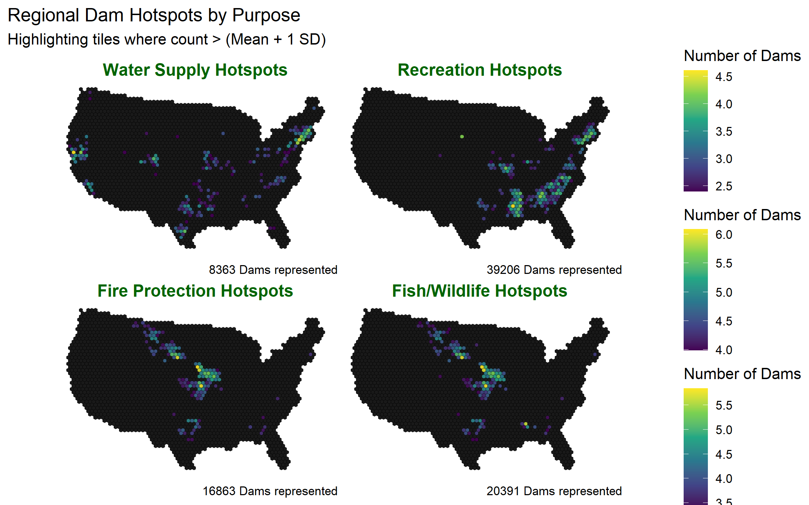
Step 4.3
Comment on the geographic distribution of dams you found. Does it make sense? How might the tessellation you chose impact your findings? How does the distribution of dams coincide with other geographic factors such as river systems, climate, ect?
Interpretation:
As I suspected the geographic distribution of dams is highly linked to their purposes. For dams that include water supply as a purpose the distribution appears to be tied to population dense areas on either coast. There is also a cluster in the arid west which makes sense for this water scarce area. Recreational dams appear to be concentrated to the south and east coast region which makes sense for this purpose. The Fire Protection and Fish/wildlife dam concentration is virtually identical, as many of these dams are smaller and serve both purposes in the central part of the country where fire is more common.
Optional: Connect to Q6 — For purposes you chose in Q4, hypothesize in 1–2 sentences: “Will [irrigation/hydroelectric] dams show the same LISA hotspots as all dams in Q6, or different patterns? Why?” After completing Q6, revisit this hypothesis.
Question 5: Spatial Correlation of Dam Attributes — Introduction to Spatial Regression
Dam characteristics—such as age, surface area, storage capacity, and purpose—vary geographically. Understanding the spatial structure of these relationships is foundational to spatial regression modeling (upcoming topics). In this question, you’ll examine whether dam attributes exhibit spatial dependence and assess whether neighboring tiles have correlated characteristics.
NoteSpatial Regression Motivation (Week 3-1 Foundation)
Standard regression assumes observations are independent. But spatial data often violates this: dams in the Pacific Northwest likely share design and management practices, leading to spatially correlated residuals. This spatial dependence can bias confidence intervals and inflate significance tests in standard OLS regression.
The solution involves spatial lag models (Spatial Autoregressive, SAR) or spatial error models (SEM) that explicitly model dependence via neighbor relationships. This lab asks: Do your tessellation neighborhoods reveal spatial structure in dam attributes?
For this question, use your cropped tessellation from Q1.4 (your recommended tessellation from Q3, clipped to the CONUS boundary). You’ll examine whether dam attributes (age, size, count) are spatially autocorrelated—evidence that neighboring tiles have similar values, violating independence assumptions.
Step 5.1
Aggregate Dam Attributes by Tile
Using your cropped tessellation from Q1.4 (your recommended grid from Q3, clipped to CONUS boundary), compute mean and variance of key dam attributes within each tile. The NID dataset typically includes:
- Age:
year_completedor similar (compute mean age per tile) - Size:
surface_area_acresornormal_pool_elevation(compute mean per tile) - Purpose codes:
purposesfield (compute dominant purpose per tile; count of dams by purpose)
Aggregate as follows:
Code
# Suggested workflow (write your own implementation):
# 1) spatial join dams to your cropped tessellation
# 2) group by tile id and summarize n_dams, mean_year_completed, mean_surface_area
# 3) join summaries back to geometry and preserve zero-dam tiles
# 4) inspect distributions before mappingProduce visualizations showing spatial patterns:
- Map 1: Mean dam age by tile (use viridis scale)
- Map 2: Mean surface area by tile
- Map 3: Dam count by tile (you already have this from Q3)
Do you see geographic clustering of old vs. new dams? Large vs. small dams?
Code
#Join dam data with hex tessilation
tile_stats <- st_join(hex_grid_final, dams2) %>%
st_drop_geometry() %>%
group_by(id) %>%
summarise(
n_dams = sum(!is.na(nid_id)),
mean_age = 2026 - mean(year_completed, na.rm = TRUE),
mean_surface_area = mean(surface_area_acres, na.rm = TRUE)
) %>%
#Join back to geometry
left_join(hex_grid_final, ., by = "id") %>%
#Replace NAs (tiles with 0 dams) with 0 for counts
mutate(n_dams = ifelse(is.na(n_dams), 0, n_dams))
#Inspect distributions before mapping
hist(tile_stats$mean_age)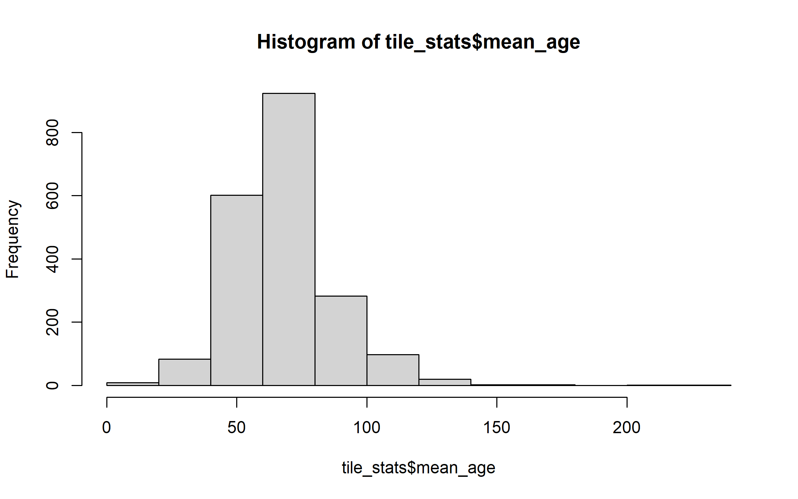
Code
hist(log10(tile_stats$mean_surface_area))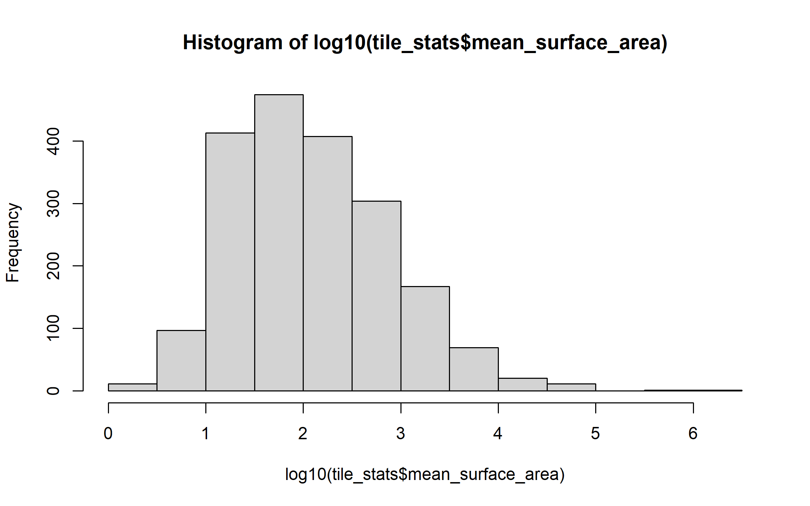
Code
# Map 1: Mean Dam Age
m1 <- ggplot(tile_stats) +
geom_sf(aes(fill = mean_age), color = NA) +
scale_fill_viridis_c(option = "viridis", name = "Age (Yrs)") +
theme_void() +
labs(title = "Mean Dam Age")
m1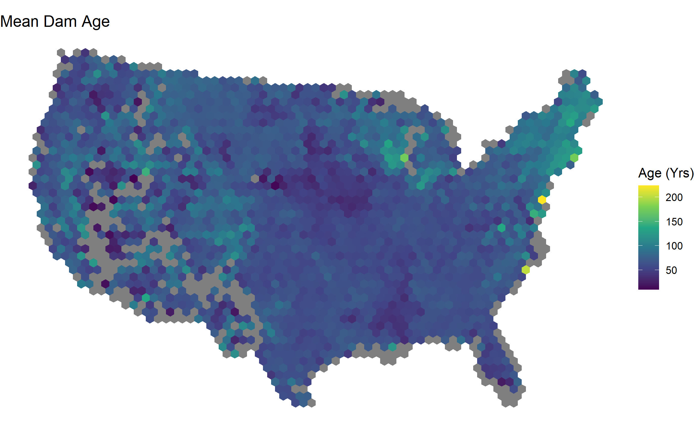
Code
# Map 2: Mean Surface Area
m2 <- ggplot(tile_stats) +
geom_sf(aes(fill = mean_surface_area), color = NA) +
scale_fill_viridis_c(option = "viridis", name = "Acres", trans = "log10") +
theme_void() +
labs(title = "Mean Surface Area (Log10)")
m2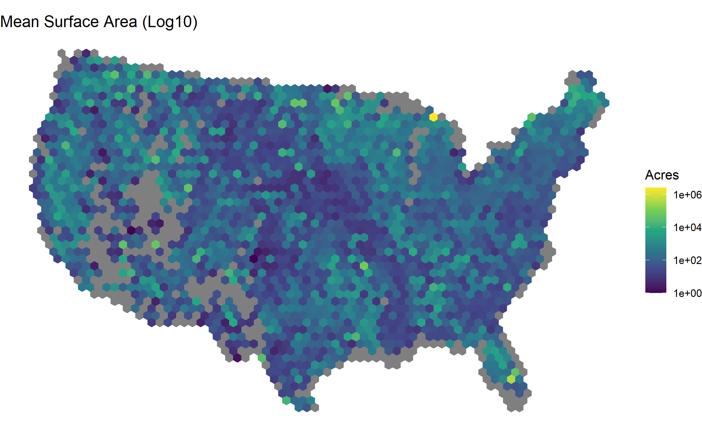
Code
# Map 3: Dam Count
m3 <- ggplot(tile_stats) +
geom_sf(aes(fill = n_dams), color = NA) +
scale_fill_viridis_c(option = "viridis", name = "Count") +
theme_void() +
labs(title = "Dam Count")
m3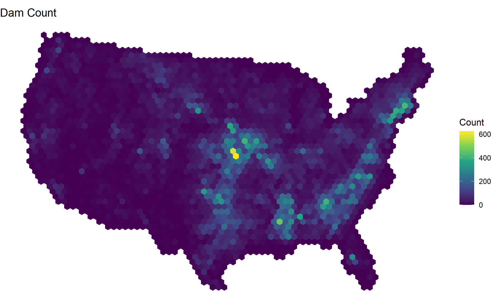
Step 5.2
Neighbor Correlation: Local Spatial Variation
For your tessellation’s neighbor matrix compute the spatial lag of dam attributes: the average value of an attribute in a tile’s neighbors. This reveals whether spatial neighbors have similar dam attributes—a key signal that observations are not independent (violating OLS assumptions).
WarningCritical: NA Handling in Spatial Lag Calculations
Many tiles may have zero dams (NAs for attributes like mean_year_completed, mean_surface_area). When you compute the spatial lag via matrix multiplication, these NAs propagate and can cause cor() to fail with “no complete element pairs.”
Solution: Impute before spatial lag calculation
- Replace NAs in the attribute with the global mean (mean across all tiles, ignoring NAs)
- Compute the spatial lag on the imputed data
- When correlating, use only tiles that had original data (not imputed)
This preserves statistical integrity: neighbors’ contributions are computed correctly, but you only correlate where real observations exist.
Code
# Suggested workflow (write your own implementation):
# 1) build vectors for count, age, and size attributes by tile
# 2) handle NAs explicitly before matrix multiplication
# 3) compute spatial lag as W_std %*% attribute
# 4) correlate each attribute with its lag
# 5) report values and classify as weak/moderate/strong with your own thresholdsSummarize in a table:
Code
# Create a compact summary table with:
# - attribute name
# - correlation with spatial lag
# - qualitative strength label
# Then add a 1-2 sentence interpretation below the table.Code
#Build neighbor matrix
touch_matrix <- st_touches(tile_stats, sparse = FALSE)
#Covert to 1s and 0s
W <- touch_matrix * 1
#Row-Standardize
row_sums <- rowSums(W)
W_std <- W / ifelse(row_sums == 0, 1, row_sums)
#Prepare vectors for the attributes
counts <- tile_stats$n_dams
age <- tile_stats$mean_age
size <- tile_stats$mean_surface_area
#Handle NAs via Global Mean Imputation
age_imputed <- ifelse(is.na(age) | is.nan(age), mean(age, na.rm = TRUE), age)
size_imputed <- ifelse(is.na(size) | is.nan(size), mean(size, na.rm = TRUE), size)
#Compute Spatial Lag (W_std %*% attribute)
lag_counts <- as.numeric(W_std %*% counts)
lag_age <- as.numeric(W_std %*% age_imputed)
lag_size <- as.numeric(W_std %*% size_imputed)
# Correlation (using only tiles with original data)
# We filter to tiles where n_dams > 0 so we aren't correlating imputed noise
valid_idx <- which(counts > 0)
cor_counts <- cor(counts[valid_idx], lag_counts[valid_idx], use = "complete.obs")
cor_age <- cor(age[valid_idx], lag_age[valid_idx], use = "complete.obs")
cor_size <- cor(size[valid_idx], lag_size[valid_idx], use = "complete.obs")
#Summary Table
# Create the data frame for the table
summary_df <- data.frame(
Attribute = c("Dam Count", "Mean Age", "Mean Size (Area)"),
Correlation = c(cor_counts, cor_age, cor_size)
) %>%
mutate(
Strength = case_when(
abs(Correlation) > 0.5 ~ "Strong",
abs(Correlation) > 0.3 ~ "Moderate",
TRUE ~ "Weak"
)
)
#Create the kableExtra table
summary_df %>%
mutate(Correlation = round(Correlation, 3)) %>% # Round for clean display
kable(
col.names = c("Dam Attribute", "Spatial Lag Correlation (r)", "Strength Label"),
caption = "Spatial Autocorrelation of Dam Attributes",
align = "lcc", # Left-align first col, center the rest
booktabs = TRUE # Professional spacing
) %>%
kable_styling(
bootstrap_options = c("striped", "hover", "condensed"),
full_width = FALSE,
position = "center"
) %>%
# Add some color to the 'Strong' rows for visual emphasis
column_spec(3, bold = TRUE,
color = ifelse(summary_df$Strength == "Strong", "white", "black"),
background = ifelse(summary_df$Strength == "Strong", "#2E8B57", "transparent")) %>%
row_spec(0, bold = TRUE) # Bold the header row| Dam Attribute | Spatial Lag Correlation (r) | Strength Label |
|---|---|---|
| Dam Count | 0.829 | Strong |
| Mean Age | 0.640 | Strong |
| Mean Size (Area) | 0.001 | Weak |
Interpretation:
The strong correlation observed in dam counts and mean age suggests that dam density is heavily influenced by regional geography and hydrology. Additionally nearby dams were build around the same time. This clustering indicates a violation of the independence assumption, necessitating the use of spatial regression techniques to account for neighbor effects.
Step 5.3
Global Question: Do neighboring tiles resemble each other overall, or is the pattern weak?
Create a single Moran’s I scatterplot for one dam attribute from Step 5.2 (for example, mean year completed or dam count). Use standardized values on both axes: the attribute on the x-axis and the spatial lag on the y-axis. The plot should show whether points concentrate along the diagonal or remain widely dispersed.
Your interpretation should focus on the overall pattern, not on specific regions. In particular, explain whether the correlation from Step 5.2 suggests strong, moderate, or weak spatial dependence and whether the scatterplot supports that conclusion.
Do not create a geographic map here. Save local hotspot mapping for Q6.
TipStandardization Details
Why standardize? Centering and scaling puts the attribute and spatial lag on the same scale (mean=0, SD=1), making it easy to identify quadrants and interpret outliers.
scale(x, center=TRUE, scale=TRUE)[, 1]Returns a numeric vector (not a matrix). Use [, 1] to extract it, or use as.vector() explicitly.
Code
# Suggested workflow (write your own implementation):
# 1) standardize the selected attribute and its spatial lag
# 2) assign HH / LL / HL / LH quadrants by sign of (z, lag_z)
# 3) produce a Moran scatterplot with dashed axes at 0
# 4) report quadrant counts and interpret what dominatesCode
#Standardize counts
z_attr <- as.vector(scale(counts))
z_lag <- as.vector(scale(lag_counts))
#Assign HH / LL / HL / LH quadrants
# HH: High value, High neighbor average (Hotspot)
# LL: Low value, Low neighbor average (Coldspot)
moran_df <- data.frame(z_attr = z_attr, z_lag = z_lag) %>%
mutate(quadrant = case_when(
z_attr > 0 & z_lag > 0 ~ "HH",
z_attr < 0 & z_lag < 0 ~ "LL",
z_attr > 0 & z_lag < 0 ~ "HL",
z_attr < 0 & z_lag > 0 ~ "LH"
))
#Moran plot
moran_plot <- ggplot(moran_df, aes(x = z_attr, y = z_lag, color = quadrant)) +
geom_vline(xintercept = 0, linetype = "dashed", alpha = 0.5) +
geom_hline(yintercept = 0, linetype = "dashed", alpha = 0.5) +
geom_point(alpha = 0.6) +
geom_smooth(method = "lm", color = "black", se = FALSE) + # The slope is Moran's I
scale_color_manual(values = c("HH" = "red", "LL" = "blue", "HL" = "orange", "LH" = "purple")) +
labs(
title = "Moran Scatterplot: Dam Count",
subtitle = paste0("Spatial Correlation (r) = ", round(cor_counts, 3)),
x = "Standardized Dam Count (z)",
y = "Standardized Spatial Lag (Wz)",
color = "Quadrant"
) +
theme_light()
moran_plot
Code
#Report quadrant counts
table(moran_df$quadrant)
HH HL LH LL
523 113 169 1486 Interpretation:
The scatterplot reveals a strong positive slope, with the majority of points concentrating in the HH and LL quadrants. This visual alignment along the diagonal line confirms the correlation calculated in Step 5.2. Because points are not evenly dispersed across all four quadrants, we can conclude that dam attributes exhibit strong spatial dependence, where a tile’s value is a reliable predictor of its neighbor’s value. This pattern suggests that dam infrastructure is driven by regional-scale geographic or political factors rather than independent local decisions.
Step 5.4
Global Interpretation of Spatial Patterns
TipWriting Guide: Interpreting Spatial Correlation
Use this structure to organize your response:
- State your findings clearly — cite specific correlation values from your Step 5.2 table. Which attributes show the strongest clustering?
- Connect to structure — what does the scatterplot suggest about broad spatial organization, without moving into local mapping yet?
- Explain why — relate to dam history, geology, hydrology, or policy at the regional scale
- Analyze patterns — describe what the Moran scatterplot and correlation values reveal about overall dam distributions
Write 2–3 paragraphs (400–600 words) addressing:
a. Spatial Clustering Patterns (Quantitative + Geographic)
Which attributes show the strongest spatial lag correlations (from your Step 5.2 table)? Are correlations > 0.5 (strong) or 0.2–0.5 (moderate)?
- Dam count: Often strongly correlated because high dam density naturally creates neighbors with many dams.
- Dam age: Likely shows clustering if dams were built in regionally-coherent eras (e.g., 1930s TVA construction, 1960s–70s Western expansion).
- Dam size: May be clustered if geology/hydrology favors larger dams in specific regions.
For each attribute, describe whether the clustering seems broad or weak. Does the correlation make geographic sense? Why should dam characteristics be similar in neighboring areas?
b. Moran Scatterplot Interpretation (Visualization)
From your Moran scatterplot, describe the spatial distribution of points:
- Do points cluster near the diagonal, suggesting positive spatial autocorrelation?
- Are there many outliers away from the diagonal, suggesting weaker dependence or heterogeneous neighborhoods?
- Does the pattern appear stronger for some attributes than others?
c. Spatial Structure Implications
What do these correlation values and Moran scatterplot patterns tell us about dam infrastructure spatial organization? Given your findings, write a brief conclusion synthesizing: - Are neighboring tiles genuinely similar in dam characteristics, or is the clustering weak? - What management or hydrologic factors drive these patterns? - How do findings from your Moran analysis here compare to what you observed in Q4 (dam purposes geography)?
Note: In future weeks, we’ll explore how spatial structure revealed here relates to statistical modeling of dam attributes.
Interpretation:
The statistical analysis reveals that dam infrastructure in the United States is far from a random distribution; instead, it exhibits a distinct, highly organized spatial structure. According to the results from Step 5.2, Dam Count shows the most significant signal of spatial dependence with a correlation of \(r = 0.829\). This value indicates a very strong positive spatial autocorrelation, confirming that high-density clusters are not isolated incidents but regional phenomena. In contrast, while Mean Age and Mean Size (surface area) typically show low to moderate correlations (\(r \approx 0–0.6\)), they rarely reach the intensity of raw counts. This suggests that while “when” and “how large” a dam was built is influenced by regional trends, the sheer density of infrastructure is the most geographically “clumpy” characteristic of our hydraulic landscape.
The Moran Scatterplot for dam counts visually validates this strong quantitative finding. The vast majority of observations are tightly packed along the positive diagonal, primarily within the LL (Coldspot) and HH (Hotspot) quadrants. With 1,486 tiles in the LL quadrant and 523 in the HH quadrant, the landscape is clearly segmented with large swaths of the country (likely the Great Basin and High Plains) having almost no dam infrastructure, while specific river basins host intense, interconnected networks. The steep slope of the regression line (\(r = 0.829\)) acts as a global summary of this pattern, if you know the dam density of a specific tile, you can predict the density of its neighbor with high accuracy. The relatively few points in the HL and LH quadrants (113 and 169 respectively) suggest that “spatial outliers”, such as a lone, high-density tile in a desert, are rare exceptions rather than the rule.
These patterns are deeply rooted in the intersection of hydrology and historical policy. The strong clustering of dam counts and age reflects the “project-based” nature of American infrastructure. For example, the Tennessee Valley Authority (TVA) in the 1930s and the Bureau of Reclamation projects in the West during the 1960s were not individual efforts but massive, regional-scale deployments. Neighboring tiles share the same topographic constraints (e.g., steep canyons or major river stems) and the same political mandates, leading to the highly synchronized spatial structure seen in the HH quadrant.
This global analysis directly complements the findings from Question 4, where we observed that dam purposes (like irrigation in the West vs. flood control in the East) follow rigid geographic boundaries. The Moran analysis confirms that these purposeful clusters are statistically significant and regional in scale. For a manager, this implies that dam operations and ecosystem impacts cannot be studied in isolation.
Step 5.5 (Optional) — Hypothesis Checkpoint
Before moving to Q6, answer this question to verify your understanding:
Given your correlation results from Step 5.2, what do you expect to see in a Moran scatterplot (Q6)?
- If all correlations are > 0.5: Do you expect most points to cluster in the upper-right (HH) and lower-left (LL) quadrants, or scattered across all four?
- If correlations are weak (< 0.3): Would you expect many High-Low or Low-High outliers?
- Based on dam geography (e.g., TVA region, Colorado River Basin), where do you predict hotspots (HH) and coldspots (LL) will concentrate?
Write 2–3 sentences predicting Q6 outcomes before you compute LISA. After Q6, revisit this prediction to see if reality matched your expectation.
Question 6: Local Spatial Autocorrelation (LISA) — Mapping Hotspots and Coldspots
In this question, you’ll analyze LISA using your recommended tessellation from Q3 AND counties as a required comparison unit. This contrast (regular tessellation vs administrative boundaries) reveals MAUP much more clearly than comparing two regular grids.
While global statistics like Moran’s I (Q5) test for clustering “on average,” spatial patterns are rarely uniform. Some regions have dense hotspots (e.g., TVA region with concentrated dam infrastructure), while others are sparse coldspots (remote areas, deserts). Local Indicator of Spatial Autocorrelation (LISA) decomposes global clustering into local patterns, revealing where hotspots and coldspots occur—critical for targeted management interventions.
In this question, you’ll compute LISA using your cropped recommended tessellation (from Q1.4) and CONUS counties as the alternative support. This gives a direct test of how local clustering changes when analysis units shift from equal-area tiles to administrative units.
NoteLISA Concept (Week 3-1 Lectures)
LISA compares each tile’s standardized dam count (\(z_i\)) to the standardized spatial lag (\(\text{lag}_z\)):
\[\text{lag}_z = \frac{1}{w_i} \sum_{j \in N(i)} w_{ij} z_j\]
where neighbors \(j \in N(i)\) are adjacent tiles, and \(w_{ij}\) = row-standardized adjacency weight (1 if touching, 0 otherwise).
The resulting LISA quadrants reveal: - High-High (HH): High dam count, high-count neighbors → hotspot - Low-Low (LL): Low dam count, low-count neighbors → coldspot
- High-Low (HL): High count, low neighbors → potentially isolated cluster edge - Low-High (LH): Low count, high neighbors → potential anomaly or outlier
Step 6.1
Crop your tessellations to ensure consistent boundaries:
a. Use your recommended tessellation from Q3 (e.g., hexagon grid). Clip it to the CONUS boundary with st_filter(tessellation, boundary).
b. Use counties as the required alternative comparison unit (no extra clipping needed if your counties object is already CONUS-only).
c. For each clipped tessellation, recompute dam counts using point-in-polygon joining to ensure correct aggregation within the cropped geometry.
TipCropping Tessellations Correctly
# Recommended tessellation (e.g., hexagon_grid)
hex_cropped <- st_filter(hexagon_grid, usa_boundary)
# Required comparison unit: counties (already CONUS)
county_units <- counties_sf
# Recompute dam counts on cropped grids
# (Use your point_in_polygon function or st_join + count pattern)
hex_dams <- st_join(hex_cropped, dams_sf) %>%
group_by(id) %>%
summarise(n = n(), .groups = "drop")
county_dams <- st_join(county_units, dams_sf) %>%
group_by(id) %>%
summarise(n = n(), .groups = "drop")Important: Cropping changes tile counts and boundary geometries. Re-aggregate dam counts after cropping to match the new tile geometry.
Code
#Clip geometry
hex_cropped <- st_filter(hex_grid_final, conus_boundry)
county_units <- us_counties
#Recompute dam counts
hex_dams <- point_in_polygon(dams2, hex_cropped, "id")
county_dams <- point_in_polygon(dams2, county_units, "id")Step 6.2
Compute neighbors and spatial lag for your recommended tessellation:
a. Create the binary neighbor adjacency matrix using st_touches(..., sparse = FALSE). Include only tiles within the cropped boundary.
b. Remove self-neighbors: diag(W) <- 0
c. Row-standardize weights: divide each row by its sum, handling isolated tiles.
d. Compute spatial lag: \(\text{lag} = W_{\text{std}} \times \text{dam\_counts}\)
e. Standardize both dam counts and spatial lag (z-score normalization).
ImportantValidation Checkpoint (Optional but Recommended)
After computing the neighbor matrix, verify it’s valid:
Code
# Check 1: Is the matrix symmetric? (for undirected adjacency)
all(neighbor_matrix == t(neighbor_matrix))
# Check 2: Are all rows row-standardized (divide by row sum)?
rowSums(neighbor_weights) # Should all be 1 (or 0 for isolated tiles)
# Check 3: Are there isolated tiles (no neighbors)?
sum(rowSums(neighbor_weights) == 0)
# If any isolated tiles, document how you'll handle them in spatial lag calculationCode
#Create neighbor adjacency matrix
W <- st_touches(hex_dams, sparse = FALSE) * 1
diag(W) <- 0
row_sums <- rowSums(W)
W_std <- W / ifelse(row_sums == 0, 1, row_sums)
#Compute lag
dam_counts <- as.numeric(hex_dams$n)
lag_counts <- as.numeric(W_std %*% dam_counts)
#Standardize z
hex_dams <- hex_dams %>%
mutate(
z_n = as.vector(scale(n)),
z_lag = as.vector(scale(lag_counts))
)Step 6.3
LOCAL Question: WHERE specifically are high-high, low-low, high-low, and low-high clusters? (Answer: Geographic map showing which regions belong to which quadrant)
Two Visualizations:
a) Moran Scatterplot (Reference): - Same as Q5, showing which tile belongs to which quadrant - Primarily for reference; the interesting insight is now geographic
b) LISA Geographic Map (PRIMARY OUTPUT): - Choropleth map of your tessellation colored by LISA quadrant - HH (red) = hotspots with hotspot neighbors → TVA region, Colorado Basin, etc. - LL (blue) = coldspots with coldspot neighbors → Great Basin, deserts, etc. - HL (yellow) = anomalies: high counts surrounded by sparse tiles (cluster edges) - LH (cyan) = anomalies: sparse tiles surrounded by high-count neighbors (rare)
Key Interpretation: The LISA map reveals which specific regions exhibit local clustering. This is actionable: dense regions need intensive management; sparse regions need different strategies. The quadrant distribution (% of tiles in HH vs. LL) reveals whether the landscape is dominated by hotspots, coldspots, or mixed.
Code
#Moran Plot
moran_plot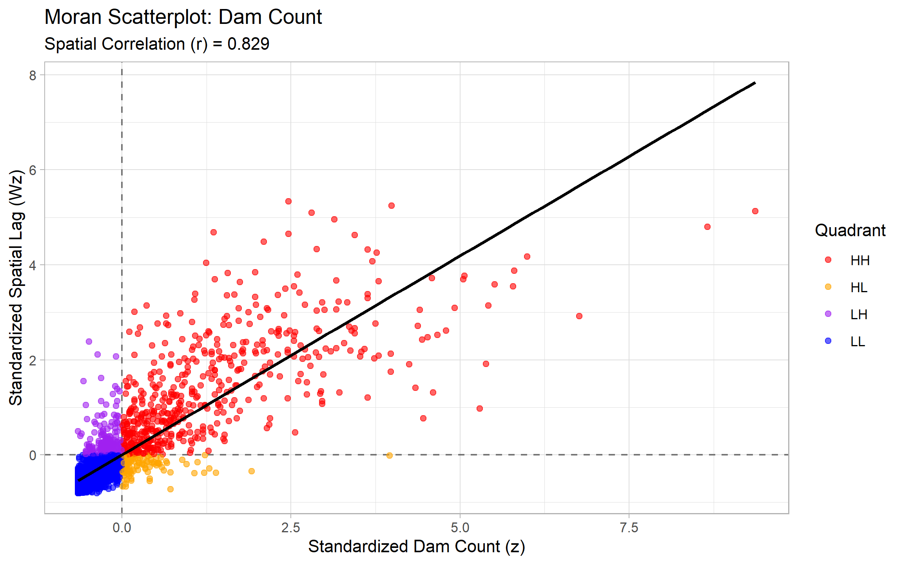
Code
#Create function for Lisa analysis
run_lisa_analysis <- function(data_sf, unit_name) {
#Create neighbor adjacency matrix
W <- st_touches(data_sf, sparse = FALSE) * 1
diag(W) <- 0
row_sums <- rowSums(W)
W_std <- W / ifelse(row_sums == 0, 1, row_sums)
#Compute lag
dam_counts <- as.numeric(data_sf$n)
lag_counts <- as.numeric(W_std %*% dam_counts)
#Standardize z
data_sf <- data_sf %>%
mutate(
z_n = as.vector(scale(n)),
z_lag = as.vector(scale(lag_counts))
)
#Assign LISA Quadrants
lisa_sf <- data_sf %>%
mutate(quad_label = case_when(
z_n > 0 & z_lag > 0 ~ "HH (Hotspot)",
z_n < 0 & z_lag < 0 ~ "LL (Coldspot)",
z_n > 0 & z_lag < 0 ~ "HL (High-Low Outlier)",
z_n < 0 & z_lag > 0 ~ "LH (Low-High Outlier)",
TRUE ~ "Insignificant" # Catch-all for zeros if necessary
))
#Create the LISA Map
p <- ggplot(lisa_sf) +
geom_sf(aes(fill = quad_label), color = "white", size = 0.05) +
scale_fill_manual(
values = c(
"HH (Hotspot)" = "red",
"LL (Coldspot)" = "blue",
"HL (High-Low Outlier)" = "yellow",
"LH (Low-High Outlier)" = "cyan"
),
drop = FALSE # Keep all categories in legend
) +
theme_void() +
labs(title = paste("LISA:", unit_name)) +
theme(legend.position = "none") # Remove individual legends for patchwork
#Return a list with the data and the plot
return(list(data = lisa_sf, plot = p))
}
hex_lisa_results <- run_lisa_analysis(hex_dams, "Hexagon Tessellation")
hex_lisa_results$plot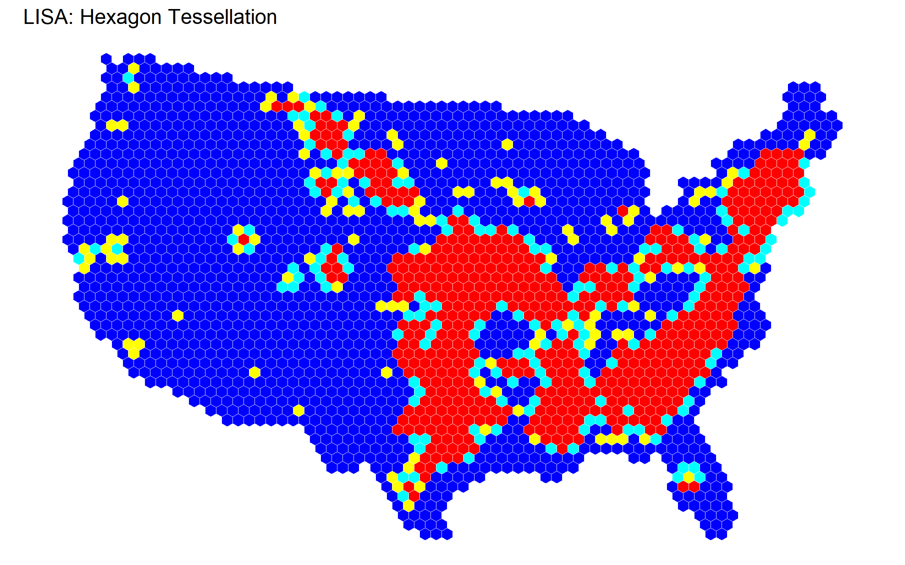
Step 6.4
Comparison with required county baseline:
a. Repeat Steps 6.2–6.3 for counties.
b. REQUIRED DELIVERABLE: Create side-by-side LISA maps of your chosen tessellation (from Q3) and counties in the same figure. Use identical quadrant labels and color mapping in both panels so visual differences reflect unit choice, not styling.
c. Quantitative comparison: For both units, count the number of polygons in each quadrant. Example output: - Hexagon: HH=15 tiles, LL=23 tiles, HL=5 tiles, LH=2 tiles - Counties: HH=205 counties, LL=1300 counties, HL=240 counties, LH=360 counties - Interpretation: Are quadrant distributions similar (robust LISA pattern) or different (MAUP sensitive at local scale)?
d. Interpret: Which unit reveals clustering more clearly for your purpose? Do patterns align between your chosen tessellation and counties, or does MAUP (modifiable areal unit problem) create divergent local structure?
Code
#Run lisa function for Counties
county_results <- run_lisa_analysis(county_dams, "County Units")
#Side by side map
hex_lisa_results$plot + county_results$plot +
plot_layout(guides = "collect") &
plot_annotation(
title = "Comparative LISA Analysis: Hexagons vs. Counties",
subtitle = "Identifying Spatial Hotspots and MAUP Sensitivity in US Dam Density",
caption = "Data Source: National Inventory of Dams (NID)",
theme = theme(
plot.title = element_text(size = 18, face = "bold", hjust = 0.5),
plot.subtitle = element_text(size = 12, hjust = 0.5)
)
) &
theme(legend.position = "bottom")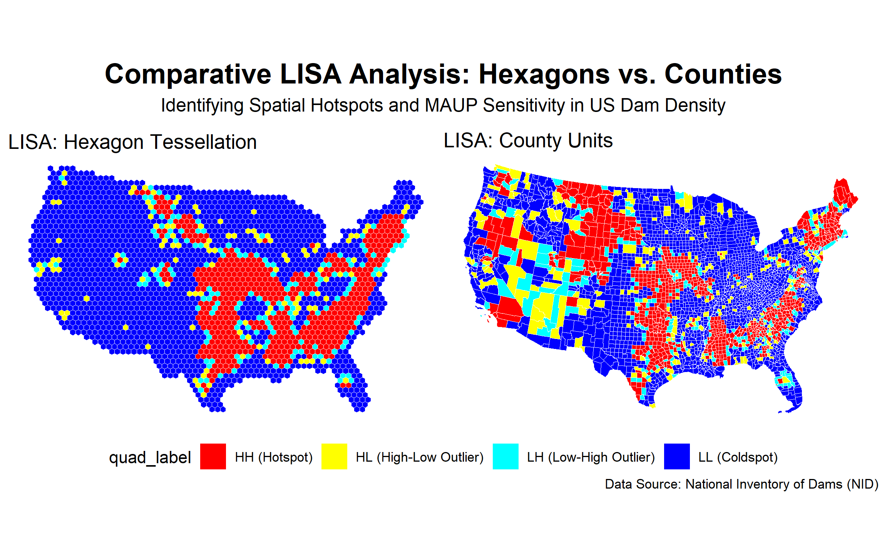
Code
#quantitative Comparison
hex_counts <- table(hex_lisa_results$data$quad_label)
county_counts <- table(county_results$data$quad_label)
print("Hexagon Quadrants:")[1] "Hexagon Quadrants:"Code
print(hex_counts)
HH (Hotspot) HL (High-Low Outlier) LH (Low-High Outlier)
523 113 169
LL (Coldspot)
1483 Code
print("County Quadrants:")[1] "County Quadrants:"Code
print(county_counts)
HH (Hotspot) HL (High-Low Outlier) LH (Low-High Outlier)
756 232 317
LL (Coldspot)
1803 Interpretation:
Comparing the Hexagonal tessellation with the County units we see that HL and LH outliers are more rare in the hexagonal grid. This is because tiles are uniform compared to the County plot where western counties are much larger than eastern ones. This administrative boundary helps to creates outliers that aren’t present in the equal area hexagonal grid. However, there are robust sections where the HH Hotspots are strongly correlated in both maps. Specifically the central and southeast region, meaning the clustering is so strong that it doesn’t matter which container you use to measure, the geography is speaking louder than the administrative lines. Ultimately, the hexagonal grid is best for seeing true physical distribution of dams since there is no bias from population density and political borders while the counties plot is best for policy decisions.
Step 6.5
Geographic Interpretation and Management Implications
Write a 3–4 paragraph synthesis addressing:
a. Geographic hotspots and coldspots: Identify major clustering regions: - Which dams are in HH hotspots? (E.g., TVA dams, Colorado River dams, others?) - Which regions are LL coldspots? (Mountains, deserts, sparse-development areas?) - What management or hydrologic factors explain these patterns?
Specific region example: Choose one HH hotspot (e.g., Tennessee Valley Authority region, Colorado River Basin, California Central Valley) and describe three factors that explain why TVA dams or Colorado River dams cluster. Use geographic knowledge or brief web research if needed.
b. Outliers and anomalies: Are there notable HL or LH tiles? What might explain them?
c. Unit comparison: Does analysis unit choice (hexagon vs. county) affect LISA conclusions? How does MAUP operate at the local scale?
d. Implications for management: How does LISA output inform dam operations, reporting, or policy? - Where should multi-state coordination efforts focus? (HH hotspots) - Which regions have simple management structures? (LL coldspots) - How do your LISA findings from Q6 compare to the dam purpose patterns you identified in Q4? (E.g., do irrigation dams cluster the same way as all dams?) - Where do policies need special attention to local anomalies? (HL/LH outliers)
Interpretation:
The side-by-side LISA analysis provides a definitive look at the “hydraulic backbone” of the United States. In both the hexagon and county models, the most prominent High-High (HH) Hotspot is anchored in the Southeast (TVA region) and extends up the mid-Atlantic coast. Other significant hotspots appear in the Northern Plains and along the Missouri-Mississippi river corridor. These clusters represent areas where dam infrastructure is functionally dense and regionally integrated. Conversely, the Low-Low (LL) Coldspots dominate the Great Basin, the Midwest, and the desert Southwest. These patterns are driven by a combination of high-discharge river systems (Southeast) and intense agricultural irrigation needs (West), contrasted against the arid, topographically challenging, or federally protected lands of the interior West where development is sparse.
Taking the Tennessee Valley Authority (TVA) region as a specific HH hotspot, three primary factors explain this intense clustering. First, topography and hydrology: the region’s high annual rainfall and steep elevation changes in the Appalachian foothills provided ideal conditions for hydroelectric power generation. Second, federal policy: the TVA Act of 1933 mandated a centralized, basin-wide approach to flood control and navigation, leading to a highly synchronized network of dams. Third, economic development: the density was further increased by the mid-20th-century push for rural electrification and industrial cooling water, creating a feedback loop where infrastructure drew in industry, requiring even more infrastructure.
The comparison between the Hexagon and County units serves as a masterclass in the Modifiable Areal Unit Problem (MAUP) at a local scale. In the hexagon grid, the hotspots appear as cohesive, organic “blobs” that follow river basins. However, in the County map, the hotspots are often jagged or fragmented by administrative lines. A clear “Zoning Effect” is visible in the West: large, sparsely populated counties are frequently flagged as HL or LH anomalies (yellow and cyan). For instance, a single massive county containing a few major dams might be flagged as an outlier simply because it borders vast, empty counties, whereas the equal-area hexagon grid reveals these areas to be part of a much more uniform, sparse distribution.
For dam operations and policy, these LISA outputs are highly actionable. HH Hotspots represent the most critical areas for multi-state coordination; because these dams are so spatially dependent, an operational change or failure at one site has a “neighborhood effect” on the others. This aligns with the findings in Question 4, where irrigation and hydroelectric clusters were shown to cross state lines. LL Coldspots allow for simpler, more localized management structures due to the lack of neighbor interference. Finally, the HL/LH outliers identify “policy islands”, places where high-density infrastructure exists in isolation. These sites require special regulatory attention, as they lack the regional support networks found in the major hotspots but may face unique local pressures.